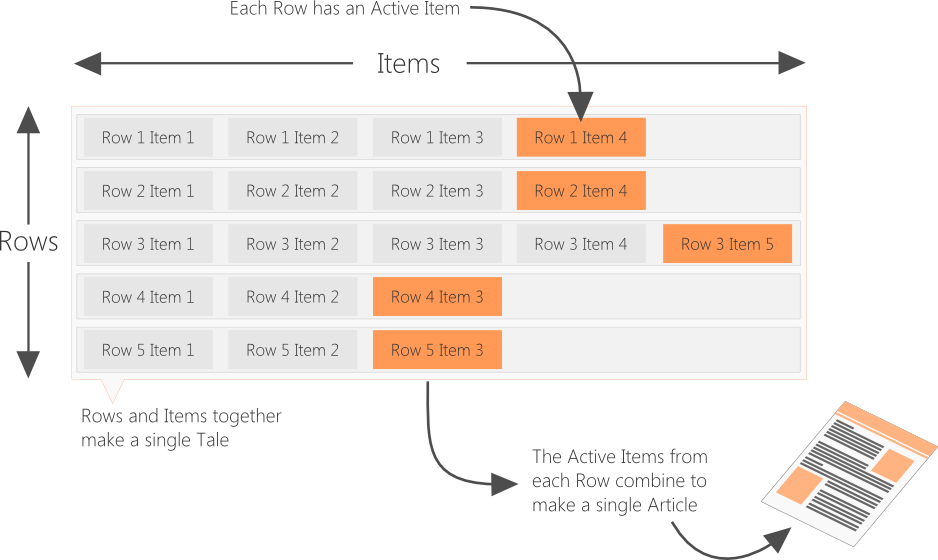

Scattertale is for writing on your own or with others
Imagine an article that is made up of sections that you can easily rearrange and easily add
revisions to any part that you can swap around at any time. That is what Scattertale does
It allows you to easily move text around to create articles and allows different people to work on different parts
You create what are called Tales which are like projects
A Tale contains one or more Rows and a Row contains one or more Items
Think of a Row as a section of an Article and an Item as a revision to a section of an Article
An Item could be a single word, a sentence, a paragraph, a page, a chapter or whatever you like
By combining one Item from every Row you can create an Article
Articles can be published and shared with everyone
Help is in the top-right corner of the page on every page
Remember to click on Help if you get stuck anywhere !
If you haven't used Scattertale before, start by creating an account on the Home Page
See an example of how it works by clicking the Try It Out button on the navigation bar
The main search page is Here . That's where you can search public tales
Please email any questions to james4165@hotmail.com